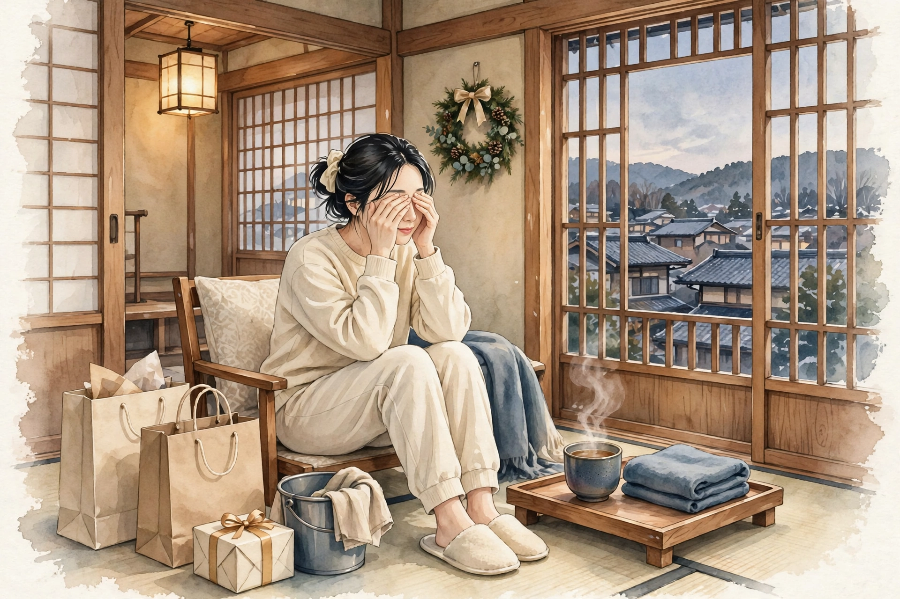

京都でクリスマス・年末の準備に気になる目の疲れ感｜買い物や掃除の合間の過ごし方とセルフケア、受診の目安

クリスマスの贈り物を選びに河原町を歩き回り、帰宅してからは大掃除と年賀状の準備——。夕方になると目がしょぼしょぼして、小さな文字が見えにくくなる——。 普段は気にならない目の疲れ感が、クリスマス・年末の準備が重なる時期に目立ってくる、という方は少なくありません。 この記事では、クリスマス・年末の準備の時期に感じる目の疲れ感について、一般的な解説と、買い物での画面確認や店内の明るさ、贈り物の包装や年賀状といった細かい手作業、掃除の合間の姿勢など考えられる要因の整理、買い物や掃除の合間に取り入れられるセルフケア、受診の目安をまとめました。 なお、観光の後に感じる目の疲れ感を取り上げた観光の後の目の疲れ感の記事、雨の日に感じる目の疲れ感を取り上げた雨の日の目の疲れ感の記事とは場面を分け、ここでは「クリスマス・年末の準備という時期と、目の疲れ感」に焦点を当ててご紹介します。同じ時期の肩まわりについては、年末の忙しさに気になる肩こりの記事もあわせてご覧ください。
クリスマス・年末の準備の時期の目の「疲れ感」とは
目の疲れ感は、目が重い・しょぼしょぼする・かすんで見える、といった感覚を表す一般的な言い方で、それ自体が一つの病名というわけではありません。 感じ方もさまざまで、夕方になると目の奥が重く感じる方もいれば、まばたきの回数が増える方、明るい店内やイルミネーションの光がまぶしく感じる方もいます。
12月は、贈り物選びの買い物、大掃除、年賀状や帰省・旅行の手配など、目を使う用事が同じ時期に重なりやすい季節です。 一つひとつは小さな用事でも、画面を見る時間、細かい文字や品物を見分ける時間、明るさの違う場所を行き来する時間が積み重なると、普段の週では表に出にくい疲れ感が、この時期に目立ってくることがあります。 まずは「どの日の・どんな準備の後に・休むとどう感じるか」を振り返ってみることが、無理のないケアの出発点になります。
クリスマス・年末の準備の時期の目の疲れ感に考えられる要因
この時期の目の疲れ感の背景には、一つの原因ではなく、準備の用事と過ごし方の積み重ねが重なっていることがあります。一般に、要因として次のようなものが挙げられます。いずれも断定ではなく、ご自身の体と日常を振り返るための整理としてご覧ください。
- 買い物にともなう画面時間：贈り物を探すときは、スマートフォンで価格や在庫、地図や営業時間を確認する場面が増えます。店内と画面を交互に見る時間が長くなると、目を休ませる機会が減り、疲れ感を意識しやすくなります
- 店内の明るさやイルミネーションの光：年末の店内は照明が明るく、街にはイルミネーションも増えます。明るい場所と夕方の薄暗い屋外を行き来すると、明暗の変化に目が慣れにくく、まぶしさや疲れ感として感じられることがあります
- 細かい手作業の集中：贈り物の包装、年賀状の宛名書き、細かい値札や説明書きの確認など、目を近くのものに向け続ける作業がこの時期は重なります。近くを見続ける時間が長いと、目の疲れ感を意識しやすくなります
- 掃除の合間の姿勢とほこりっぽさ：大掃除では、高いところや隅を見上げたりのぞき込んだりする姿勢が続きます。本棚や押し入れの奥をのぞくような場面では目を凝らしやすく、ほこりの舞う中での作業が目の重さと重なる方もいます
- 暖房の効いた室内の乾燥：12月は暖房を使う時間が長くなり、室内の空気が乾燥しがちです。乾いた空気の中で画面や手元を見続ける時間が重なると、目の疲れ感を意識しやすくなることがあります
- 予定の立て込みと睡眠の短縮：買い物や掃除、集まりの準備が重なり、就寝が遅くなる日が続くと、前日の目の疲れ感を持ち越したまま朝を迎えやすくなります
- 肩・首まわりのこり感との重なり：買い物袋を持つ、掃除で腕や肩を使う、うつむいて手作業をする——この時期は肩や首まわりにも負担が重なりやすく、目のまわりの重さとあわせて感じる方もいます
- 帰省・旅行の手配での調べもの：年末年始の移動や宿の手配では、時刻表や予約画面を細かく見比べる時間が増えます。夜遅くまで画面を見続ける日が重なると、目の疲れ感も目立ちやすくなります
東洋医学では、目の疲れ感は「肝」との結びつきで捉え、目のまわりの重さや、肩・首まわりのこり感、眠りの浅さが、その巡りの滞りと関係すると考えます。 当サロンのお悩み別ガイドでも、施術でのアプローチをご紹介していますので、あわせてご覧ください。
買い物や掃除の合間に取り入れられるセルフケア
準備で予定が詰まる時期でも、買い物や掃除の合間に取り入れやすい対処をまとめました。目の疲れ感が強いときは無理をせず、まずは目を休ませることを優先してください。
- 買い物の合間に遠くを見る：一軒買い物を終えたら、通りの先や空など遠くをぼんやり眺める時間をとってみてください。腰かけて休める場所を先に決めておくと、合間の休息が取りやすくなります
- 目を閉じて休ませる：帰宅後や作業の一区切りごとに、数分だけ目を閉じ、まぶたの力を抜いて休ませる時間をとってみてください
- 掃除は区切って、合間に目を休ませる：大掃除は部屋ごと・日ごとに分け、一区切りごとに窓の外を眺める、目を閉じるなど、小さな休息をはさんでみてください
- 蒸しタオルで目元を温める：温かく絞ったタオルを目元にのせ、目まわりを温める時間をとってみてください。熱すぎると感じたらすぐに外してください
- まばたきを意識する：画面や細かい手作業に集中しているとまばたきの回数が減りがちです。意識してゆっくりまばたきをしてみてください
- 画面の明るさと文字の大きさを見直す：画面の明るさを部屋の明るさに合わせ、文字が小さいと感じたら表示を大きくしてみてください
- 手元の明かりを足す：包装や宛名書きなど細かい作業は、手元が暗いと目を凝らしやすくなります。明かりを足して、時間を決めて区切りながら進めてみてください
- 乾燥を感じたら水分と室内のうるおいを：温かい飲み物をこまめにとる、加湿器を使うなど、暖房の効いた室内で過ごす時間の乾燥対策もあわせて見直してみてください
- 寝る前の準備作業に区切りをつける：手配や調べものは時間を決めて終え、忙しい時期こそ睡眠時間を確保するようにしてみてください
12月の京都は、四条河原町や祇園の街並みにイルミネーションが灯り、年末の買い物とあわせて歩く楽しみのある時期です。 お出かけの際は、買い物の荷物が増える前に休む場所を決めておき、距離を欲張らず、目の様子を見ながら回ると、無理のない一日になります。
こんなときは医療機関へ
目の疲れ感の多くは日常の積み重ねと関係しますが、中には早めの確認が必要な場合もあります。次のような場合は、眼科や内科など医療機関への受診をご検討ください。
- 視力が急に下がったように感じる
- 目のかすみが片目だけに出る、視野の一部が見えにくい
- 目の痛みや充血が続いている
- 目やにやかゆみが強い
- 光がまぶしくてつらい
- 頭痛や吐き気をともなう
- 目の疲れ感が日に日に強くなる、感じる頻度が増えている
- 市販の目薬を使ってもおさまらず、日常生活に支障が出ている
当サロンは医療機関ではなく、施術はリラクゼーションと美容を目的としたものです。診断や治療は行いませんので、 気になる症状がある場合はまず医療機関へご相談ください。
サロンのご案内 — ステラアルタイル（京都）
ステラアルタイルは、京都市内の女性専用プライベートサロンです（阪急京都河原町駅・京阪祇園四条駅からご利用いただけます。詳しい住所は予約確定後にご案内します）。 オイルマッサージと美容整体を組み合わせ、背中・脚・腕・頭まわりまで全身の巡りをたどるように丁寧にケアし、目もと・頭まわり、肩・首まわりのケアも含みます。施術の前には、その日の体の状態についてカウンセリングを行い、力加減を調整しながら進めます。日々の体の使い方や休み方についてもお伝えします。 夕方からの営業ですので、お仕事帰りにもご利用いただけます。
基本コースは90分10,000円（税込）の1コースです。月〜土17:00〜22:00（日曜休み）、完全予約制です。 現在は開院準備中で、予約の受付はまだ開始していません。
■ 目の疲れと向き合うための本（PR）
目の疲れ感について、もう少し詳しく知りたい方へ。目のはたらきや、日々の過ごし方を解説した本を3冊ご紹介します。（このコーナーのリンクにはアフィリエイトリンク（PR）が含まれます。掲載している本の内容は一般的な解説としてご紹介しています。）